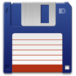

Файл-менеджеры
Файловый менеджер - это компьютерная программа, предоставляющая интерфейс пользователя для работы с файловой системой и файлами. Файловый менеджер позволяет выполнять наиболее частые операции над файлами — создание, открытие/проигрывание/просмотр, редактирование, перемещение, переименование, копирование, удаление, изменение атрибутов и свойств, поиск файлов и назначение прав. Помимо основных функций, многие файловые менеджеры включают ряд дополнительных возможностей, например, таких, как работа с сетью (через FTP, NFS и т. п.), резервное копирование, управление принтерами и пр.
|  |  |